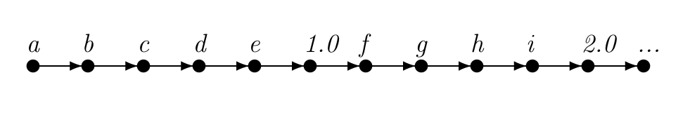
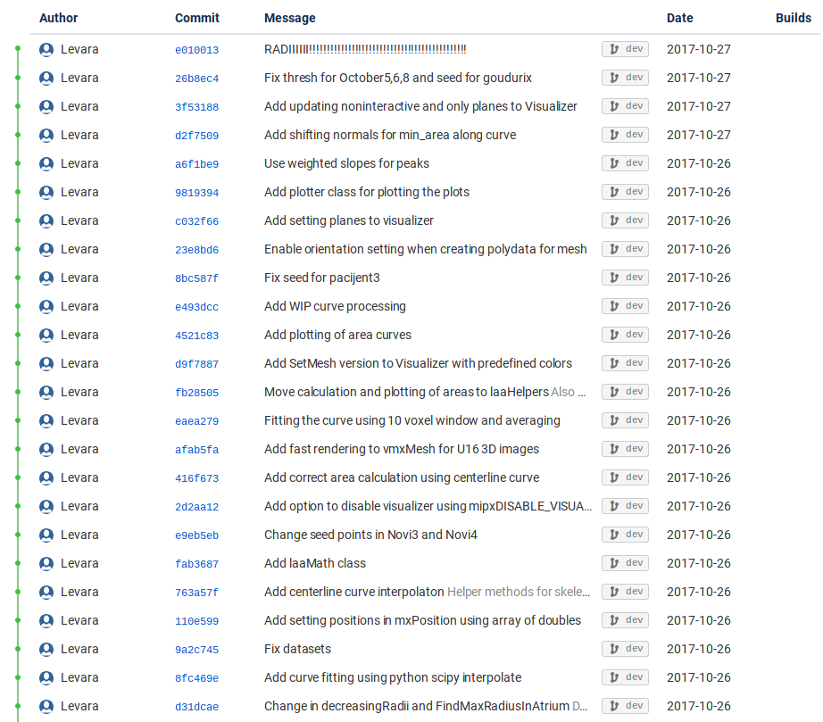
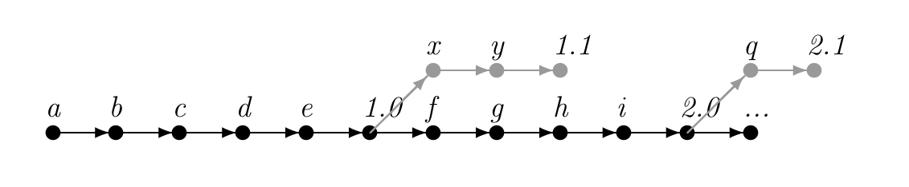
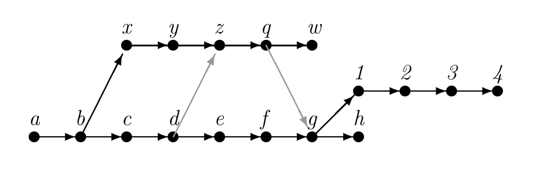
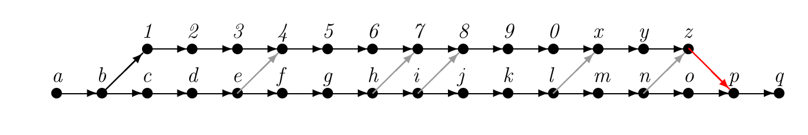

Software Engineering course @ FERIT Osijek. Attribution for background images
Software Engineering Programsko inženjerstvo
Izv.prof.dr.sc. Irena Galić
Hrvoje Leventić
Predavanje 2
Verzioniranje izvornog koda
Sadržaj
- Što je verzioniranje
- Što je git
- Semantičko verzioniranje
- Primjeri git repozitorija
- github
Ovo predavanje u velikom dijelu prati knjigu:
Tomo Krajina, Uvod u Git, github link
dostupno pod CC-BY-SA 3.0 licencom
Što je verzioniranje
[Version control] is the management of changes to documents, computer programs, large web sites, and other collections of information.
Source: Wikipedia: Version control
- Ne odnosi se samo na softver (npr. izdanja knjiga)
- Brojčani ili slovni kod (revizija)
- Vremenska oznaka + osoba
- Postaje jako bitno razvojem računarstva
- Najnapredniji sustavi za verzioniranje su oni za razvoj softvera
Sustavi za verzioniranje
engl. Version control systems (VCS)
- Najčešće su samostojeće aplikacije
- Nalaze se i ugrađene u razne druge aplikacija:
- Tekstualni procesori
- Spreadsheetovi
- Sustavi za upravljanje sadržajem (CMS)
- Kolaborativni web dokumenti
Primjena u programskom inženjerstvu
In computer software engineering, revision control is any kind of practice that tracks and provides control over changes to source code.
Source: Wikipedia: Version control
- Neozaobilan za velike projekte
- Može služiti i za dokumentaciju i konfiguraciju
- Više verzija softvera "vani"
- Greške često prisutne samo u određenim verzijama
- Omogućuje kolaboraciju
Struktura
- Praćenje promjena na individualnim dijelovima (npr. datoteke)
- Intuitivnije, ali uzrokuje probleme
- renaming, splitting, merging
- Tretiranje promjena kao cjeline
- Manje intuitivno
- Olakšava praćenje kompleksnih promjena
- Centralizirani
- Decentralizirani
Struktura grafa

Source: https://stackoverflow.com/questions/40873964/github-network-graph-not-displaying-correctly
- trunk, branches, tags, HEAD
- Ne mora imati samo jedan root
Terminologija
- check-out
- check-in | commit
- working copy
- file locking
- remote
Tradicionalni VCS
- Centralizirani
- Klijent-server model
- Najčešće jedan repozitorij
- Atomic operations
- File locking
- Version merging
- Istovremeno uređivanje
- Tekstualne datoteke vs. binary
Distribuirani VCS
- Distributed revision control systems (DRCS)
- peer-to-peer
- Svaka radna kopija je cjeloviti repozitorij
- Razmjena patcheva
- Brze lokalne operacije (commit, pregled povjesti ili vraćanje promjena)
- Komunikacija potrebna samo za sinkronizaciju
- Svaka radna kopija je efektivno backup
Najpoznatiji VCS-ovi
- Centralizirani
- Concurent Versions System (CVS)
- SubVersion (SVN)
- Distribuirani
- BitKeeper
- git
- Mercurial
Git
I'm an egotistical bastard, and I name all my projects after myself. First 'Linux', now 'git'.
Source: Linus Torvalds
- Linus Torvalds
- Maintainer: Junio Hamano
Kriteriji dizajna
- Primjena patcha ne smije trajati više od 3 sekunde
-
Take Concurrent Versions System (CVS) as an example of what not to do; if in doubt, make the exact opposite decision
- Podrška za distribuirani workflow kao BitKeeper
- Jaka zaštita protiv korupcije, bilo namjerne ili slučajne
- Zamišljen kao baza drugim SCM-ovima
Git
- Brz razvoj:
- Početak: 3 travnja 2005.
- Najava: 6 travnja 2005.
- self-hosting: 7 travnja 2005.
- Prvi merge 18 travnja 2005.
- Performance goals: 29 travnja 2005.
- Kernel: 16. lipnja 2005.
- Maintainter: 26 lipnja 2005.
- git1.0: 21. prosinca 2005.
Globalno prihvaćen
Source: https://en.wikipedia.org/wiki/Git#Adoption
- Prema velikom broju statistika najčešće korišteni SCM
- Od veljače 2017. Microsoft Windows u Gitu
- Brojne nove hosting platforme
- Postojeće prisiljene podržati Git
Razlozi prihvaćanja
- Distribuiran workflow
- fork + pull-request
- brzina
- Lagano i brzo grananje
- Linux
Linearno verzioniranje koda
- Idealna situacija
- Unaprijed znamo kako aplikacija treba izgledati
- Ili razvijamo sami
Mit o verzioniranju
- Nije samo za timove s više ljudi
- Jednostavan i koristan čak i radimo sami
Linearno verzioniranje koda
- Česta situacija kada nemamo kontrolu nad distribucijom
- Neki klijenti na jednoj verziji, a neki na drugoj
- "Nova verzija stare verzije"
Grafovi i spajanje grana
- Stanje povjesti projekta
- Ne možemo odrediti kojim su redom nastajali čvorovi
- Možemo odrediti ovisnosti čvorova
Primjer evolucije projekta
Primjer dugog feature brancha
Moj prvi git repozitorij
- Nije potreban udaljeni server za checkout
- Svaki direktorij može biti git repozitorij
- Više remotea
Inicijalizacija
$ cd moj-prvi-projekt
$ git init
-
.git - Backup = kopiranje .git direktorija
- DEMO
Spremanje izmjena
- Commit zapisuje stanje projekta
- Promjene se spremaju lokalno
Index
- Ne čuva datoteke nego stanja datoteka
- Mi odlučujemo u kojem trenutku ćemo ih snimiti
- Git repozitorij čuva različita stanja datoteka (povijest)
- Radna verzija repozitorija čuva trenutno stanje direktorija
- Poseban "međuprostor" za commit -> Index
Demo
status
add
commit
diff
Spremanje u index
- Dodavanje u index sa add
- Potrebno je dodati i kada obrišemo datoteku (sprema se stanje)
- Možemo dodati i direktorij